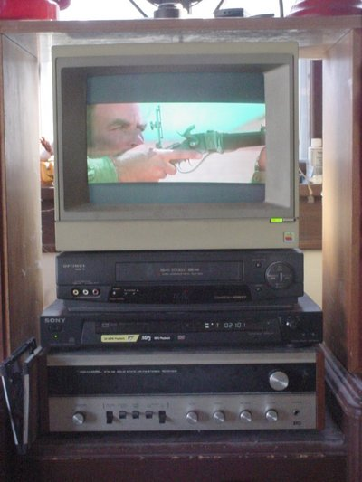

The Foolish Things We Do With Our Computers
By Ben Okopnik
"Foolish Things" is a now-and-again compilation that we run based on our
readers' input; once we have several of these stories assembled in one
place, we get to share them with all of you. If you enjoy reading these
cautionary tales of woe, proud stories of triumph, and just plain weird and
fun things that happen between humans and silicon, that's great; if you
have some to share so that others may enjoy them, even better. Please send
them to  .
.
[ You can even tell us that it happened to A Friend of Yours, and we'll believe you. ]
-- Ben
Booting the PC, Take 2
by Frank "Frodo" Rodolf, The Answer Gang
Last Sunday, my test-pc (a PII-350) decided to die on me. Since it was clearly a motherboard failure, I decided to just get some new hardware to create a new workstation, and make my current workstation (an Athlon 1200 based machine) the new test-pc.
The next day, after work, I went and bought a motherboard, a CPU (AMD Athlon XP 2500+), memory, a hard disk, and a mid-sized tower case. Moving some hardware between the old test-pc and the current workstation and then building the new workstation went easily. Even putting the cooler on the cpu did not give me any trouble, for once.
Time to test the newbie... Knoppix 3.4... works nicely... Huh? Why is it suddenly rebooting?
Since it was time for me to go to bed, I decided to just run memtest86 on it, and see if it would still be okay, the next morning.
The next morning, I woke up to see the thing still working. It passed all tests, and was still reactive. Assuming there must have been a little power dip or something like that the previous evening, I decided to just start a Debian install on it, while I go to work.
6 pm, home from work, things still looked good, and I was able to finish the install. At about 7 pm though, a sudden reboot again. And again at about 8:30.
By now, I was getting worried, since my other computers had not rebooted, so a power dip was unlikely. I opened the case, checked if the fan was really on right, took out and reseated the memory.
After booting, everything seems okay, so I decide to just play around with it for a bit. At 10 pm, it reboots again. And suddenly I knew what was going on.
This nice new case has the reset switch at almost 4 inches from the bottom of the case, and it sticks out a bit... And the toe of the slipper on my left foot just happens to be at exactly that height, at times.
Apple TV
by Dale A. Raby

About a month ago, our 1980 or so vintage RCA console television died. This was, of course, on a Saturday afternoon, right after we had rented a bunch of DVD's for the weekend.
Alternatives... as there was no money to buy a new set just then... were limited. I had a few black-and-white portable sets around, but this did not go over well with the female half of the household.
I went into the basement where I keep my cave (this is a male shelter from all things female... all men have them somewhere) and thought about the problem. I dug through the piles of junk in the basement reasoning that if I dug deep enough, I might find something that would work. This is kind of like wandering aimlessly through Fleet Farm looking for something but not knowing what that something is. I really didn't expect to find a color television buried in my basement, though.
There were plenty of old VGA monitors, dot-matrix printers, even an old Apple IIe CPU. Wait a minute... didn't those things use standard video monitors? I dug a little deeper and discovered an Apple IIe color monitor. In the back, I found a standard RCA A/V jack just like the ones on the back of the DVD player and the VCR. OK, maybe I had something here.
A television consists of a tuner, video monitor, and sound system. I had the monitor in front of me. OK, the tuner could be supplied by the VCR, I reasoned, and when the DVD player was being used, a tuner wasn't necessary. I solved the problem of having to unplug one or the other by connecting them both to a "Y" connector with the common end plugged into the monitor. Now I only had to shut one of them off and turn the other one on in order to get my video feed.
OK, sound. No problem, had an old Radio Shack receiver from about 1969 that still worked and a couple of speakers. Now I had sound, and good quality sound at that.
As might be imagined, the back of my improvised entertainment system looks like something the Borg cobbled together using Seven-of-Nine's intestines, but when you turn everything on... it does work. I have since passed up buying a new television as I think it is kind of cool to be the only man in the world (so far as I know) who has an Apple television.
Stay tuned.
From The LG Archaeological Research Department: pour l'encourager les autres
Unearthed by Ben Okopnik
Fri Feb 21 13:02:09 1992
Message : #2835701 From: Steve Summit
Address : scs@adam.mit.edu
Group : NETCOMP.FolkLore
Subject : Re: Adminstration Horror Stories
As an undergraduate, I didn't always have time for the more troublesome
tasks that occasionally cropped up in the maintenance of this system I
worked on (the same one with the "popcorn" disk drives). One day I finally
had some free time, and sat down to:
1. rebuild the bootable removable pack I kept around in case
of emergencies, which had stopped working, and
2. reformat the disk containing the root partition, which
had a few bad blocks which hadn't gotten serious (yet).
I didn't really feel like rebuilding the emergency boot pack,
because it was a real pain, and at about the limits of my
abilities at the time. (I had spent several days learning how to
build it at all: compiling a kernel with different root, swap,
and pipe devices; finding and assembling a boot block for the
removable drive; etc.)
So I figured, what the heck, I'll perform task 2 first.
The low-level reformat takes about ten minutes. Five minutes
later, while wandering around the room waiting for it to finish,
my mind finally thought about the precedence which was lurking
in what I had been absent-mindedly assuming to be two unrelated
tasks. ("The word `bulldozer' wandered through Arthur's mind
for a moment in search of something to connect with.") I didn't
even make a mad dash for the halt switch; it was, of course, far
too late.
The really galling thing was that my whole reason for building
the bootable removable pack in the first place had been my
realization, seconds before initiating a previous reformat of
drive 0, that the backup tapes I had made wouldn't do me much
good without a bootable system with which to read them back on
to drive 0.
I learned a lot more over the next day or so: how to load in a
system from the (damaged) 2.8 BSD distribution tape, how to toggle
in a bootstrap loader from the front panel, how to deal with the
fact that the distribution kernel used different partition sizes
than we did, why it was a bad idea to use non-default partition
sizes...
The next day I learned how to order a DEC magtape boot prom. (It
didn't arrive until after I left. Years later, when I came back
to help move the system to Princeton, there was still this little
envelope kicking around with a prom in it which nobody knew what
was for...)
Ben was born in Moscow, Russia in 1962. He became interested in electricity
at the tender age of six, promptly demonstrated it by sticking a fork into
a socket and starting a fire, and has been falling down technological
mineshafts ever since. He has been working with computers since the Elder
Days, when they had to be built by soldering parts onto printed circuit
boards and programs had to fit into 4k of memory. He would gladly pay good
money to any psychologist who can cure him of the recurrent nightmares.
His subsequent experiences include creating software in nearly a dozen
languages, network and database maintenance during the approach of a
hurricane, and writing articles for publications ranging from sailing
magazines to technological journals. After a seven-year Atlantic/Caribbean
cruise under sail and passages up and down the East coast of the US, he is
currently anchored in St. Augustine, Florida. He works as a technical
instructor for Sun Microsystems and a private Open Source consultant/Web
developer. His current set of hobbies includes flying, yoga, martial arts,
motorcycles, writing, and Roman history; his Palm Pilot is crammed full of
alarms, many of which contain exclamation points.
He has been working with Linux since 1997, and credits it with his complete
loss of interest in waging nuclear warfare on parts of the Pacific Northwest.
 Ben is the Editor-in-Chief for Linux Gazette and a member of The Answer Gang.
Ben is the Editor-in-Chief for Linux Gazette and a member of The Answer Gang.